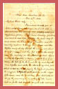
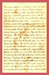
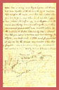
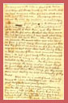
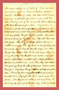
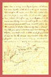
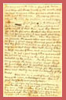
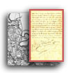

 

Moss Neck, Caroline Co. Va.
Dec. 17th, 1862
My Dear Little Nelly,
I promised to write you a letter, when I was at home, so I will take a few minutes this evening and comply [illegible] make my promise good. I left home Sunday, you know, and went to New Hope that day, the next day I went across the Blue Ridge Mountain and the next day went on to Orange Court House and then travelled nearly all day through the woods, and whre the road is sandy, and then got to where the army was the next day, on the Mattapony River. If you look on the large Atlas in Virginia, you will find four rivers, the Mat, the Ta, the Po and the Ny and they all come together and make the Mat-ta-po-ny river, near which we had our camp, among the long-leaved pine trees, the evergreen holly bushes, with prickles on the edges of the leaves; and the Sweet Juni trees that look as though they were winged, or rather the little limbs look so, for the bark projects on each side and causes the winged appearance I spoke of. We had a cold snow storm while we were at Guinea Station near the Mattapony river, but our cloth houses were very comfortable, for we had a stove, with the pipe sticking out of the door, or the slit in the side of the tent, that serves for a door. Not far from our tent runs a pretty stream of water, with a bottom of white sand and white and yellow quartz pebbles, that look very prettily through the clear water. You never saw such fences as they have here, they call them wattled fences-they throw up a ridge of dirt, leaving a ditch on one side, then they drive a row of stakes, nearly six inches apart, along the top of the ridge, and then they get long, slender cedar limbs and weave them in among the stakes, like the splints of a basket, and so make a light fence 3 or 4 feet high-nearly all the fences here are wattled ones-and then they have cedar trees growing up by the sides of the fences, and we sometimes go a long ways through two rows of pretty ever-green trees. The country here is very flat with a good many swamps, but no very high hills, and a great many pine forests-where the trees are all pines, and very thick. I saw a very pretty grave yard the other day, made by planting cedar trees in a ring and they had grown up thick & had come together at the top and the limbs had been kept cut off on the inside, and there was a place where you could go in, and when in it was like a green house, shaped like half an egg, and the ground on the inside was thickly covered with myrtle, and there were several graves with nice marble slabs-on the outside it looked like one big tree. I must now tell you about a battle we had last Saturday, the 13th of Dec., and I will make a little map for you to look at and see how the armies were located when they fought. Look at the map I have made for you. The roads are put down. red lines, our troops in black lines and the Yankees in blue ones.[map]
Our army was on the hills in front of the Mine and Telegraph Roads, mostly in the woods, and we had cannons where you see a black line with a dot on each side. The enemy came across the river on pontoon, or boat bridges made so-[drawing] of boats fastened in the streams with planks laid across them, at Fredericksburg and at the mouth of Deep Run, and they came up into the flat where the short blue lines are & they had cannons where I have made short blue lines with dots beside them- when they came up towards the woods where our men were we fired a great many thousand guns at them and they fired at us, and so we did for a long time and we drove them back, having killed a large number of them and wounded many more- we had a good many killed and wounded too, but not as many as they did, for we were protected by the woods- Now they have gone away across the river, and we must thank the good Lord that he enabled us to whip them and drive them away, for they would come and destroy us and our country if they could.
We are now on a neck of land in a big bend of the river, called Moss Neck- there is a great deal of pretty moss growing here.
I am glad you say so many good lessons as your Ma tells me- be a good girl and learn all you can- help your Ma and be kind to every body and always good-natured and be sure to love God and [illegible]. Kiss your sister Anna for Pa-
So good night, my daughter-
From your Pa-Jed. Hotchkiss
Return to the Hotchkiss Family Collection